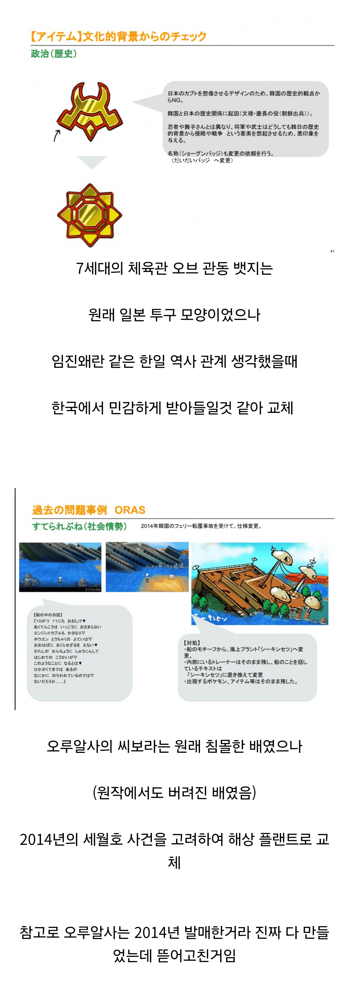

게임프리크

게임프리크
하리뭉
그게 바뀐거였음?
걍 대놓고 스모선수 모티브라고 생각했는데
살짝 더 스모스러웠다더라 진화전엔 훈도시같은거 입고있고 진화후에는 요코즈나들 두르는 밧줄같은것도 메고 있었는데 그런게 삭제됐고 코멘트에 한국에서 어려워할것같다 그런게 있었데
https://m.ruliweb.com/community/board/300143/read/68020143?search_type=subject_content&search_key=%ED%8F%AC%EC%BC%93%EB%AA%AC&view_best=1&page=1
요런게있네
얘네 은근 정치적 올바름을 신경쓰는 모습을 자주 보여주더라.
아무래도 표면적으로 초등 대상 게임이니까
"표면적으로"가 포인트네 ㅋㅋㅋㅋㅋㅋ
뒤로는 그런거 없고 금구슬 아저씨!
관람차사건 생각해보면 PC한 듯 ㅋㅋ
관람차사건은 찾아보기 전에 다시 생각해봐야함
한국배경 으로 하나 나와주라
개인적으로 내 인생에서 가장 재미있게한 포켓몬은 3세대 루비사파이어였음
그다음이 파이어레드 그린리프였고
배끝에가면 레쿠자있었던걸로 기억하는대
투구모양은 아무도 신경안쓸거같은데 ㅋㅋㅋ 2번도 그렇고
2번은 당시에는 민감했을꺼임
지금은 10년이넘었으니 그렇지만
혹시 모를 비난 받을 빠엔 저런식으로 고쳐주면 우리한테 정말 감사한거지 신경 써주고 있다는 거니까
그건 광복절날 일본순사캐릭 코스프레했던애들도 비슷한 생각을 했을거야

투구모양 잘 바꾼게 예전에 티비에서 만화 틀어줄때도 왜색이 짙다고 편집을 했던 과거가 있음.
라이징오였나? 그랬을거임
KBS였나? 포켓몬 1세대 방영할 때 왜색 좀 있는 에피소드는 다 잘라냄. 지우 단데기에서 버터풀 진화 하는 에피에서 사무라이 갑옷? 입고있는 꼬맹이 트레이너 나온다고 자르고, 무지개시티 민화 에피소드 잘리고, 연분홍시티 독수 에피소드 잘랐던 기억이 있네
아 포켓몬애니도 그랬었구나 그럼 더 신경쓸만 하네
골드런 로봇중에 일본도 차고 사무라이 투구처럼 장식한 로봇도 왜색때문에 걔가 나오는 에피소드들 썰렸을껄
한두개가 아니었네 ㄷㄷ
근데 진짜 엄청신경써주네
루주라를 돌려줘
루주라는 왜?
흑인에서 보라돌이됨
그러면서 섹드립은 즐기는 미친회사
그것은 닌텐도의 어둠...
어차피 대도각참처럼 대놓고 일본풍인 포켓몬도 더러 있는데 굳이 뱃지 안 바꿔도 되지 않았나 싶음
차라리 저 씨보라가 일제강점기 강제징용 비판한 거란 추측도 있더라
그러니까 브다샤펄처럼 외주주지말고 니들이 직접 만드세요 제발
닌텐도는 역사, 인종, 분쟁, 차별에 조금이라도 본인들의 색을 담지 않음.
생각해보면 전세계적인 시장을 상대로 장사를 하는 기업이라면 응당 보여야 하는 모범인데,
디즈니는 선을 넘었지.. 그래서 망해감
신경써주니 고맙네
그 스모선수 닮은 포켓몬도 외형변경했다더만